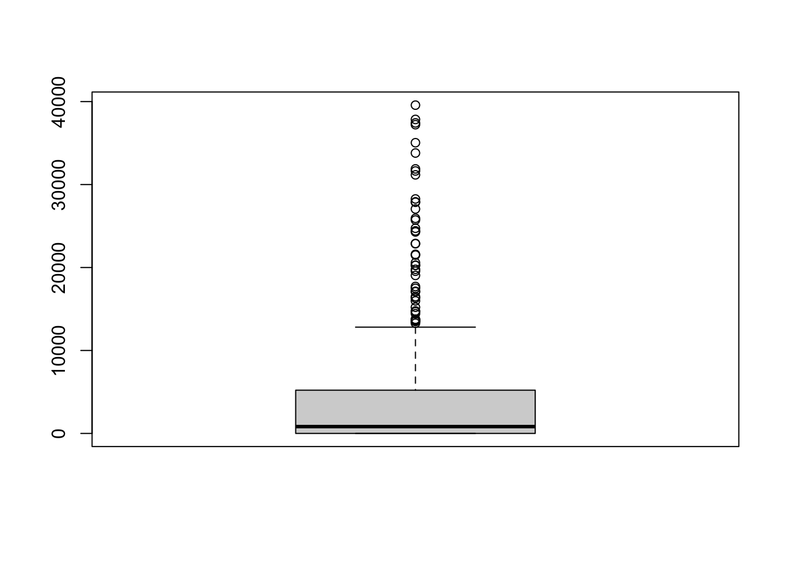

Clase 2: Trabajo práctico LaLonde (1996)
Arturo Maldonado
3/22/2021
Medidas de tendencia central
Resumen de un conjunto de datos.
Se resume mediante un valor “representativo.”
Cada observación se puede comparar con este valor de resumen. Se puede estar por debajo o por encima de este valor.
Moda
Valor mas frecuente de un conjunto de datos
Es apropiada para todo tipo de datos
Se puede observar directamente en una tabla de distribución de frecuencias.
%2012.12.02.png)
Mediana
- El valor de la observación central de un conjunto de datos ordenados de menor a mayor.

Media
Medida más conocida y “útil.”
Suma del valor de las observaciones dividida entre el número de observaciones
\[ \sum \frac{x_i} {n} = \frac{(x_1 + x_2 +x_3 +...+ x_n)} {n} \]

Resumen
| TC | Nominales | Ordinales | Numéricas |
|---|---|---|---|
| Moda | Sí | Sí | Sí |
| Mediana | No | Sí | Sí |
| Media | No | No | Sí |
Moda aplica para cualquier tipo de variable, pero menos útil.
Media aplica solo para variables numéricas, pero más útil.
Medidas de dispersión
Describir la centralidad no es suficiente. Dos distribuciones pueden tener la misma medida de tendencia central, pero diferentes realidades.
Ejemplo: distribución de puntaje en área matemática de prueba PISA aplicada en 2 países pueden tener la misma media, pero diferente forma.
¿Cómo describiría las diferencias entre el País A y el País B?

Rango
Diferencia entre el valor máximo y el mínimo. En ejemplo de edades: 68-19 = 49 años.
No un una medida muy útil.
Rango intercuartil
- Se verá cuando se vean percentiles.
Desviación estándar
Cada observación está a una “distancia” de la media. Esta distancia se llama desviación \((x_i-\bar{x})\)
Observaciones por encima de la media tendrán desviaciones positivas. Observaciones por debajo de la media tendrán desviaciones negativas.
No se puede calcular un promedio de desviaciones porque valores positivos se cancelan con negativos.
Se eleva al cuadrado las observaciones para que todas sean positivas. Se promedian esas desviaciones al cuadrado.
La desviación estándar es la raíz cuadrada de ese promedio de desviaciones al cuadrado.
Se divide entre n-1 por un tema técnico.
\[ \sum \frac{(x_i-\bar{x})^2} {n-1} \]

Paper “Evaluating the Econometric Evaluations of Training Programs with Experimental Data” (LaLonde 1986)
Pregunta: ¿tiene un efecto los programas de entrenamiento en la empleabilidad?
Supuesto: entrenando a trabajadores que no tienen las habilidades básicas hará que se muevan en el mercado laboral, dándoles experiencia laboral y consejería. Se trata de un programa estatal que garantiza un trabajo entre 9 a 18 meses. Luego de este periodo eran forzados a encontrar un trabajo regular.
Metodología: evaluación experimental. Un grupo fue parte del programa. Otro grupo comparable no fue parte del programa. Se recolectó una línea de base con información de ingresos y datos sociodemográficos. Luego se hizo recojo de información de seguimiento.
Variable de éxito: cambio en los ingresos.
Leyendo la base de datos en R
LL <- read.csv("~/OneDrive - Vanderbilt/A Cursos/Estadistica_1/Sesión 2 Centralidad Dispersión/Caso/LL.csv")Variables en la base de datos
- treated: variable dummy si el participante recibió el tratamiento (1) o no (0)
- age: edad
- education: años de educación
- black: variable dummy si el participante es Afroamericano
- married: variable dummy si el participante es casado
- nodegree: variable dummy de no tener estudios secundarios completos (high school)
- re74: ingresos reales en 1974
- re75: ingresos reales en 1975
- re78: ingresos reales en 1978
- hispanic: variable dummy si el participantes es hispano
- u74: variable dummy si era desempleado en 1974
- u75: variable dummy si era desempleado en 1975
Medidas de tendencia central
Media
¿Cual es la media de ingresos de los participantes antes de entrar al estudio? Ojo que algunos de ellos pueden haber entrado al programa y otros ser parte del grupo de comparación.
mean(LL$re74)## [1] 3630.738Aparentemente, el ingreso de los participantes del estudio en la línea de base es bastante bueno. Pero, es necesario hacer ver si ese dato refleja la “realidad” de los ingresos del conjunto de participantes del estudio. Una manera de analizar eso, es ver la distribución de respuestas de forma gráfica, por ejemplo, usando un histograma. En este gráfico, además, se puede incluir una línea que marque el punto de la media.
hist(LL$re74)
abline(v=mean(LL$re74), col="red")
Como se observa, la distribución de esta variable está sesgada hacia los valores altos de la variable. ¿Qué pasa con la media en estas situaciones?
Mediana
Para estos casos, se tiene otra medida de tendencia central, la mediana. La mediana es el punto medio de un conjunto de datos ordenados. Por ejemplo, si tengo 5 personas con los siguientes ingresos ordenados: 800, 1200, 1500, 3000, 5000. La mediana es el ingreso de la persona que está al medio de la fila ordenada, es decir, la persona en la posición 3. La mediana sería 1500 soles. La media de estas 5 observaciones sería 2300 soles. Si se quisiera “encontrar” la mediana en la base de datos, ¿qué se debería hacer? ¿Si son 722 observaciones, cuál es el punto medio?
La fila sería de observación 1…..411 / 412……822 La mediana sería el promedio simple del valor del ingreso que tiene la persona ubicada en la posición 411 (823.2544) y del de la posición 412 (824.3886).
Para calcular la mediana del grupo del estudio, se usa.
median(LL$re74)## [1] 823.8215Como se observa la mediana es mucho menor que la media y, en este caso, es un mejor resumen de la “realidad” del conjunto de ingresos de los participantes en este estudio.
¿Qué pasa si en mi ejemplo de la fila, la última persona que gana 5000 recibe un súper aumento y pasa a ganar 15000 soles. ¿Cambia la media? ¿Cambia la mediana?
Resumen de una variable
Si se quisiera ver la media y la mediana con un solo comando, se puede usar summary.
summary(LL$re74)## Min. 1st Qu. Median Mean 3rd Qu. Max.
## 0.0 0.0 823.8 3630.7 5211.8 39570.7Se observa claramente que la media es mucho mayor que la mediana. Lo cual también se puede graficar
hist(LL$re74, breaks = 15)
abline(v=mean(LL$re74), col="red")
abline(v=median(LL$re74), col="blue")
Con el comando summaryse puede ver que la mediana aparece como un caso particular de los cuartiles. Los cuartiles dividen a la distribución en grupos de igual tamaño. Así como la mediana divide a la “fila ordenada” en 2 grupos, cada uno con 411 observaciones, los cuartiles dividen la distribución en 4 grupos, cada uno con el 25% del total de observaciones (180.5 observaciones). ¿Qué significa que el Min=0? ¿Qué significa 1st Qu = 0? ¿Median a qué porcentaje corresponde? ¿3rd Qu a qué porcentaje corresponde? ¿Qué significa Max? ¿Máximo observado puede ser atípico?
Gráfico de cajas
Una forma de graficar los cuartiles es mediante el gráfico de cajas o boxplot (ver ppt). Este gráfico muestra una caja central y dos bigotes. El gráfico para la variable ingresos de la línea de base es:
boxplot(LL$re74)
¿Por qué no se muestra el bigote inferior? ¿Qué significan los puntos superiores?
Los cuartiles son una posibilidad de los percentiles. Una opción bastante usada es los deciles.
quantile(LL$re74)## 0% 25% 50% 75% 100%
## 0.0000 0.0000 823.8215 5211.7946 39570.6797quantile(LL$re74, c(0,.1,.2,.3,.4,.5,.6,.7,.8,.9,1))## 0% 10% 20% 30% 40% 50% 60%
## 0.0000 0.0000 0.0000 0.0000 0.0000 823.8215 1837.2208
## 70% 80% 90% 100%
## 3343.5705 6651.6747 10393.2177 39570.6797Tablas de frecuencias
El ingreso descrito anteriormente es para toda la muestra. El estudio, sin embargo, dividió a los participantes en 2 grupos: tratados y control. ¿Cuántos hay en cada grupo?
table(LL$treated)##
## 0 1
## 425 297La línea de base también recogió información sociodemográfica de los participantes. En particular, nos interesa saber cuántos afroamericanos hay en el grupo.
table(LL$black)##
## 0 1
## 144 578Y sobre todo saber qué nivel educativo tienen.
table(LL$education)##
## 3 4 5 6 7 8 9 10 11 12 13 14 15 16
## 1 6 5 7 15 62 110 162 195 122 23 11 2 1Las frecuencias absolutas no nos ayudan mucho, es mejor tener las frecuencias relativas.
100*table(LL$education)/sum(table(LL$education))##
## 3 4 5 6 7 8 9
## 0.1385042 0.8310249 0.6925208 0.9695291 2.0775623 8.5872576 15.2354571
## 10 11 12 13 14 15 16
## 22.4376731 27.0083102 16.8975069 3.1855956 1.5235457 0.2770083 0.1385042O, se puede usar el comando prop.table que nos da la proporción (en escala 0-1). Para reportar el porcentaje se multiplica por 100.
prop.table(table(LL$education))*100##
## 3 4 5 6 7 8 9
## 0.1385042 0.8310249 0.6925208 0.9695291 2.0775623 8.5872576 15.2354571
## 10 11 12 13 14 15 16
## 22.4376731 27.0083102 16.8975069 3.1855956 1.5235457 0.2770083 0.1385042Esta variable se podría considerar como numérica, por lo que se podría describir.
summary(LL$education)## Min. 1st Qu. Median Mean 3rd Qu. Max.
## 3.00 9.00 10.00 10.27 11.00 16.00Y se podría graficar
boxplot(LL$education)
O con un gráfico de barras.
hist(LL$education)
O mediante
barplot(table(LL$education),xlab="Años de educación",ylab="Frecuencia",cex.axis=.9,cex.names=.9,ylim=c(0,200))
abline(h=0,col='gray60')
box()
Medidas de dispersión
Rango intercuartil
Distancia entre Q3 y Q1, que acumula el 50% de los datos centrales.
IQR(LL$re74)## [1] 5211.795Para una variable numérica, la medida más usada es la desviación estándar.
sd(LL$re74)## [1] 6220.637¿Calcule una medida de dispersión basada en la mediana?
Inspeccionando la hipótesis de LaLonde
Hasta ahora se ha calculado la media de ingresos para el total de los participantes del estudio en 1974. La idea es analizar cómo cambiaron estos ingresos entre 1974 y 1978 para cada grupo. Para empezar, ¿cómo eran los ingresos de los participantes que fueron tratados y que fueron al grupo control al inicio del estudio? Para esto se tiene que calcular la media para cada uno de estos grupos. Hay varias maneras de hacer esto. Una es usando los []
mean(LL$re74[LL$treated==0])## [1] 3672.485mean(LL$re74[LL$treated==1])## [1] 3570.999Otra opción es creando otros “dataframes” para cada grupo con el comando subset.
trata <- subset(LL, LL$treated==1)
control <- subset(LL, LL$treated==0)Y en cada subgrupo calcular la media. En este caso calcularemos la media en 1978 para ver si se generaron diferencias.
mean(control$re78)## [1] 5090.048mean(trata$re78)## [1] 5976.352A simple vista, ¿se cumple la hipótesis de LaLonde?